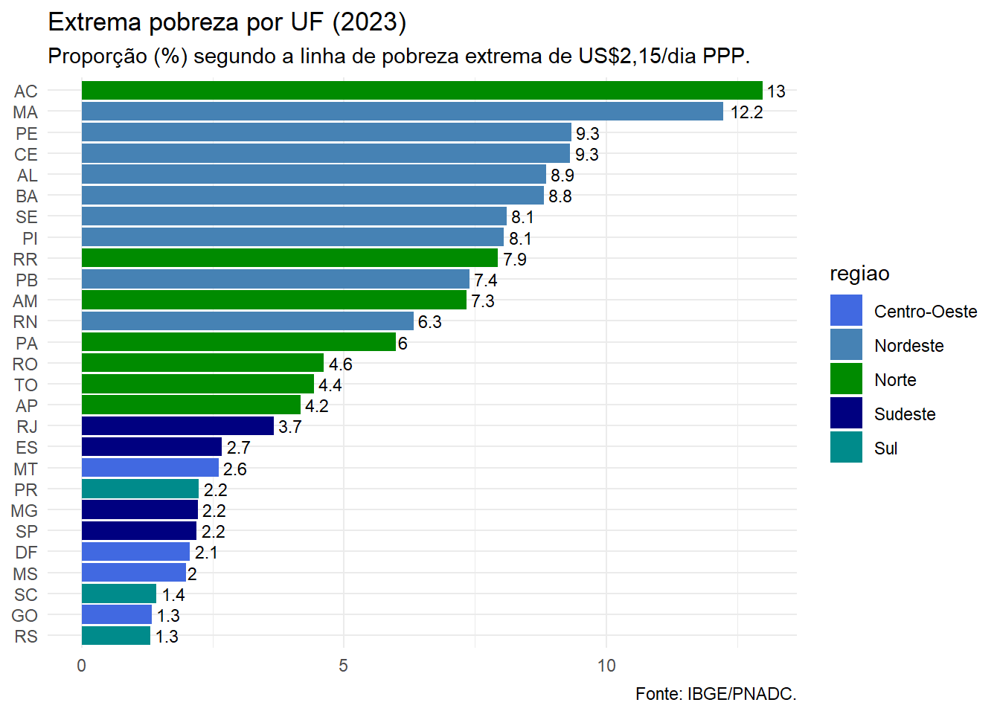
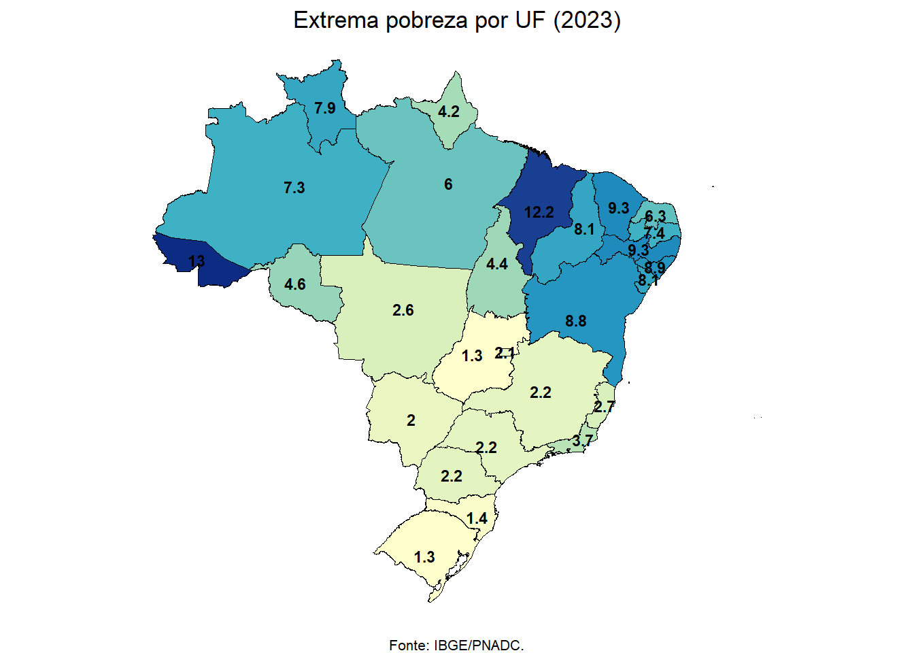

| Incidência de Pobreza Extrema | |
|---|---|
| Norte | 6.34% |
| Nordeste | 9.08% |
| Sudeste | 2.50% |
| Sul | 1.69% |
| Centro-Oeste | 1.85% |
Dinâmica recente da pobreza no Brasil
Bom, já fazia algum tempo desde a minha primeira (até agora, única) postagem nesta página. Eu confesso: não sou muito ativo para gerar este tipo de postagem aqui na minha própria página.
Mas nos últimos meses passei a integrar o grupo de pesquisadores do Instituto Brasileiro de Economia da Fundação Getúlio Vargas - FGV IBRE. De forma mais específica, do grupo de pesquisadores do Centro de Estudos para Desenvolvimento do Nordeste, a convite do Professor Flávio Ataliba, coordenador desta iniciativa. Pra mim, é um motivo de muito orgulho e uma recompensa gratificante de meus esforços no trabalho de pesquisa na área social.
No ãmbito no “Centro do Nordeste do FGV IBRE”, temos (eu, o Prof. Flávio Ataliba e o Prof. João Mários de França) realizado ótimas discussões sobre bem-estar, pobreza e desigualdade, sempre guiados pela exploração dos dados da Pesquisa Nacional por Amostra de Domicílios Contínua (PNAD Contínua) do Instituto Brasileiro de Geografia e Estatística (IBGE). Estas discussões tem se transformado em artigos postados no Blog do IBRE, como este aqui: 3,3 milhões de nordestinos saem da pobreza entre 2012 a 2023.
Aqui vou discutir um pouco dos resultados que exploramos neste artigo e, claro, atualizar os dados apresentados na minha postagem anterior Uma evidência sobre a distribuição regional da pobreza no Brasil (2021).
No artigo publicado no Blog do IBRE apresentamos e discutimos algumas evidências com base em indicadores de pobreza monetária, calculados com base nos dados da PNAD Contínua, referente ao período de 2012 a 2023.
Os indicadores foram calculados com base no rendimento de todas as fontes, atualizados a preços médios de 2023 pelo Índice de Preços ao Consumidor Amplo (IPCA). As linhas de pobreza adotadas são as recomendadas pelo Banco Mundial, convertidas de acordo com a paridade de poder de compra (2017) e ajustadas de acordo com o IPCA. Dessa forma, foram identificados como pobres os domicílios com rendimentos inferiores a linha de pobreza de US$ 6,85/ dia (PPC 2017), valor ajustado como sendo aproximadamente R$ 667/ mês. Por sua vez, são identificados como extremamente pobres os domicílios em que a medida de renda foi inferior a linha de US$ 2,15/ dia (PPC 2017), que foram convertidos para um valor de aproximadamente R$ 209/ mês.
No caso da região Nordeste, a proporção de pessoas em situação de pobreza foi estimada em aproximadamente 47,4%, em 2023, o que corresponde a mais de 27,5 milhões de pessoas. Esse valor é equivalente a 45% das pessoas em situação de pobreza no Brasil.
A tabela abaixo mostra a proporção de pessoas em situação de extrema pobreza em cada região. Temos uma evidência clara da maior proporção na região Nordeste (9,08%), seguida da região Norte (6,34%). Enquanto isso, na região Sul menos de 1,7% da população é classificada dessa forma. No Sudeste temos uma incidência de 2,5% e no Centro-Oeste de 1,85%.
Trazendo alguns comentários do artigo publicado no blog do IBRE temos que as estatísticas calculadas com base na linha de extrema pobreza mostram que 4,4% da população brasileira em 2023 pode ser identificada em situação de renda mais restrita, o que corresponde a uma estimativa de quase 9,6 milhões de pessoas.
Em 2023 o índice de pobreza extrema para o Nordeste foi estimado em pouco mais 9%, equivalente a mais de 5,2 milhões de pessoas. Em 2021, pior ano da série (com o mercado de trabalho ainda sob os efeitos da pandemia e os programas de transferência de renda antes do desenho estabelecido em 2022), o índice de extrema pobreza no Nordeste alcançou o patamar de 17,6%, onde mais de 10,1 milhões de pessoas se enquadravam nesta condição de insuficiência de renda mais severa.
Estes dados permitem inferir que de 2021 a 2023, quase 5 milhões de pessoas deixaram a condição de extrema pobreza na região Nordeste. Isso represente metade da redução de pessoas em situação de pobreza no Brasil no mesmo período (que foi de quase 9,7 milhões entre 2021 e 2023).
O gráfico a seguir apresenta uma informação mais detalhada, exibindo os indicadores de incidência de extrema pobreza para cada unidade federativa (UF). Neste gráfico a maior incidência de famílias em situação de extrema pobreza nos estados das regiões Norte e Nordeste é bastante evidente.

O estado do Acre apresenta a maior proporção de pessoas em situação de extrema pobreza, 13%. Na sequência sete dos nove estados do Nordeste. Os maiores indicadores de extrema pobreza são dos estados do Maranhão (12,2%), Pernambuco e Ceará (ambos com 9,3%). No outro extremo, as menores taxas são observadas nos estados das regiões Sul e Centro-Oeste, com destaque para os indicadores dos estados de Goiás e Rio Grande do Sul (ambos com 1,3%).
Assim como na publicação anterior, não poderia deixar de construir o mapa a seguir, que representa uma forma alternativa de apresentar os dados do gráfico anterior.

Considerações finais com destaque para a região Nordeste
Os indicadores de extrema pobreza apresentados neste texto destacam uma característica crucial das desigualdades regionais no Brasil. Em 2023, o rendimento domiciliar per capita médio estimado para a região Nordeste foi de R$1.146, correspondendo a apenas 62% da média nacional de R$1.848. Nesse mesmo ano, a participação dos rendimentos provenientes do trabalho representou 74,2% da renda média domiciliar per capita no Brasil, enquanto no Nordeste essa participação foi de 65,7%. Programas sociais foram responsáveis por 3,7% da renda média nacional, mas no Nordeste, essa contribuição alcançou um patamar próximo de 10%.
Esses dados evidenciam que o Nordeste continua distante da realidade econômica das regiões mais desenvolvidas do país, sendo, reconhecidamente, a região que abriga a maior parte da população em situação de pobreza.
Esse cenário recente (de 2023) já reflete os impactos das novas políticas de transferência de renda, que resultaram na redução da participação dos rendimentos do trabalho entre os mais pobres e no aumento da importância relativa dos programas sociais na composição da renda.
Sem condições adequadas e oportunidades de melhor inserção no mercado de trabalho, as famílias em extrema pobreza passam a depender cada vez mais das transferências de renda, como o Programa Bolsa Família e iniciativas estaduais e municipais. Essas rendas sociais preenchem uma lacuna significativa no orçamento dessas famílias. Com o aumento dos valores, como ocorreu no âmbito do Auxílio Brasil em 2022 e, posteriormente, no Bolsa Família a partir de 2023, a participação dos programas sociais se tornou ainda mais relevante. No Nordeste, onde residem 55% das pessoas em situação de extrema pobreza do país, essa contribuição é crucial.
Citation
BibTeX citation:
@online{hugo miro2025,
author = {Hugo Miro, Vitor and Hugo Miro, Vitor},
title = {Distribuição Regional Da Pobreza Monetária No {Brasil} Com
Dados Da {PNAD} {Contínua} (2023)},
date = {2025-08-08},
url = {https://vitormiro.github.io/posts/2024_08_20_poverty_2023/},
langid = {en}
}
For attribution, please cite this work as:
Hugo Miro, Vitor, and Vitor Hugo Miro. 2025. “Distribuição
Regional Da Pobreza Monetária No Brasil Com Dados Da PNAD Contínua
(2023).” August 8, 2025. https://vitormiro.github.io/posts/2024_08_20_poverty_2023/.